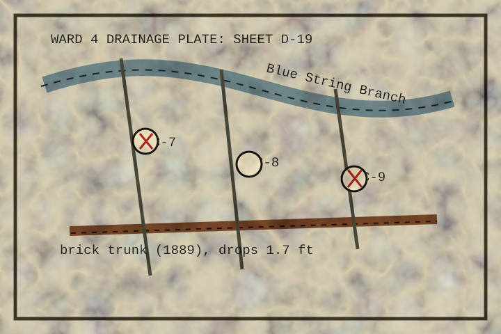

The blue channel is not the river. It is the remembered river, kept inside clay pipe and legal language. During hard rain it borrows the old road crown and appears briefly in the trolley gutter.
The brick trunk marked along the lower half was measured by chain in 1889, then redrawn after the chain was used to tow a bakery cart out of standing water.
Inspection hole C-8 has the cleanest ladder. C-7 smells like leaves even in February. C-9 answers when knocked, but so does the wall behind it.
Field instruction: when tracing flow, mark every unexplained left turn. If more than four left turns occur, you are walking around a buried cistern and should stop before the clipboard learns your name.
Related envelope in the cabinet: grate rubbings from the C-7 curb line.